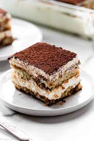

Tiramisu
Images of the Finished Dish

Ingredients with Quantities
- Ladyfingers: 24 pieces
- Espresso coffee: 1 cup, cooled
- Mascarpone cheese: 16 ounces
- Granulated sugar: 1 cup
Cooking Instructions
- Dip ladyfingers in espresso and arrange a layer in a serving dish.
- In a bowl, mix mascarpone cheese and sugar until smooth.
- Spread a layer of the mascarpone mixture over the ladyfingers.
- Repeat layers and refrigerate until set.